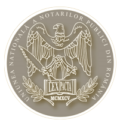

BIN Miutescu Raluca-Georgeta
Preambul
„Notariatul public român – în forma sa actuală – este un notariat de tradiție, care nu a apărut din neant, ci ca rezultat al unei evoluții normale , logice și inerente a unei realități juridice care are o experiență de secole.”
Dumitru Viorel Mănescu, notar public,
președintele Uniunii Naționale a Notarilor Publici din România

Repere Istorice
Notari publici făuritori ai României Mari:
„Notarul român, public sau de stat, celebru sau anonim, cu sacrificiu și modestie de muritor s-a dedicat unei misiuni înalte și unice de a promova dreptul ca pe un instrument al păcii și al înțelegerii.”
Doina Rotaru, notar public, prim-vicepreședinte
al Uniunii Naționale a Notarilor Publici din România.